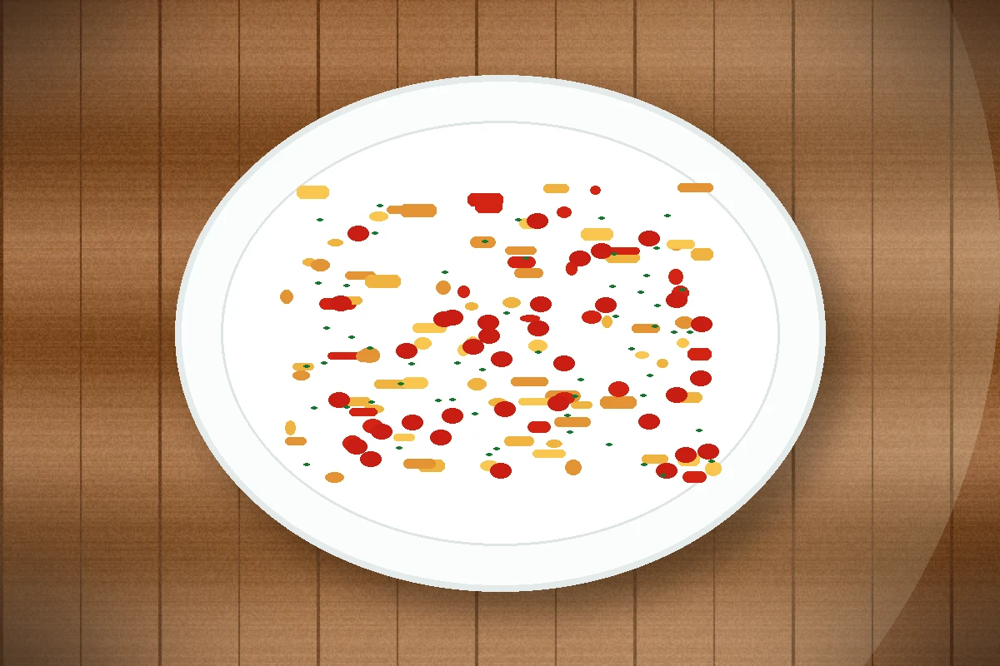

ID recette : 20000101-009
Pâtes sauce tomate enrichie
Des pâtes à la sauce tomate enrichie, simples et nourrissantes, avec une sauce plus savoureuse grâce à l’oignon, l’ail et aux légumes disponibles.
La sauce gagne en goût si l’on fait revenir les aromates avant d’ajouter la tomate. Un peu d’eau de cuisson des pâtes aide à lier la sauce sans ajouter de crème.

🧭 Repères alimentaires
Repères indicatifs à vérifier selon les marques, les remplacements d’ingrédients et les produits réellement utilisés.
🔥 Cuisson indicative
Casserole : 10 à 15 min pour la sauce, plus cuisson des pâtes selon le paquet.
Ces valeurs sont indicatives : ajuster selon le four, l’épaisseur du plat et la coloration souhaitée.
⚖️ Adapter les quantités
Le calcul adapte les quantités proportionnellement. Les valeurs nutritionnelles restent calculées sur les quantités de base.
🧺 Ingrédients avec quantités
Principaux
- 320 g — pâtes
- 400 g — tomates concassées ou sauce tomate
Secondaires
- 1 pièce — oignon
- 1 gousse — ail
- 1 c. à soupe — huile
Optionnels
- 140 g — thon
- 60 g — fromage
- 200 g — légumes râpés ou restes de légumes
👩🍳 Préparation détaillée
- Faire cuire les pâtes dans une grande casserole d’eau salée en les gardant al dente.
- Pendant ce temps, faire revenir l’oignon dans un filet d’huile. Ajouter l’ail, puis les légumes finement coupés si disponibles.
- Ajouter la tomate, les herbes, le sel et le poivre. Laisser mijoter 10 à 15 minutes pour concentrer les saveurs.
- Égoutter les pâtes en gardant un peu d’eau de cuisson.
- Mélanger les pâtes avec la sauce. Ajouter un peu d’eau de cuisson si nécessaire pour bien enrober.
💡 Astuce anti-gaspi
Un reste de légumes cuits peut être mixé dans la sauce tomate pour l’épaissir et enrichir le plat discrètement.
🔁 Variantes possibles
Ajouter thon, lentilles, haricots rouges, pois chiches, fromage râpé, crème, carotte râpée ou restes de viande. Pour une version plus parfumée, ajouter olives, câpres ou basilic.
🔎 Rechercher cette recette sur Google
🔗 Sources d’inspiration
Liens utilisés pour comparer les techniques, les variantes et les temps de préparation. La fiche reste reformulée et adaptée au projet.
📊 Valeurs nutritionnelles estimées
Estimation indicative. Les valeurs ci-dessous sont calculées à partir d’ingrédients génériques et des quantités de base. Elles ne remplacent pas les étiquettes des produits, ni un avis médical ou diététique. Voir l’explication complète.
Non officiel
| Valeur | Par portion | Pour 100 g |
|---|---|---|
| Énergie | 1983 kJ / 473.9 kcal | 640 kJ / 152.9 kcal |
| Protéines | 25.9 g | 8.4 g |
| Glucides | 68.3 g | 22.0 g |
| dont sucres | 8.8 g | 2.9 g |
| Lipides | 10.4 g | 3.3 g |
| dont acides gras saturés | 4.0 g | 1.3 g |
| Fibres | 5.7 g | 1.8 g |
| Sel | 1.0 g | 0.3 g |
Portion estimée : 310 g. Score simplifié : -4. Indicateur estimé non officiel. Il ne correspond pas à un calcul réglementaire ni à un Nutri-Score officiel.
⚠️ Allergènes et conservation
Allergènes : Gluten, Lait, Poisson
Conservation : À conserver 24 h au réfrigérateur dans une boîte fermée.
Réchauffage : À réchauffer doucement si nécessaire.
Vérifiez toujours les étiquettes des produits utilisés.
🔎 Filtres associés
Cliquez sur un bouton pour trouver les recettes associées au même champ.
Sous-catégorie : Pates
Moment du repas : Dejeuner Diner
Équipement : Casserole
Allergènes : Gluten Lait Poisson
Repères alimentaires : Sans porc Végétarien possible Vegan possible Contient gluten
📱 QR code
QR code vers la fiche en ligne.
https://recettesducoeur.github.io/recettes/20000101-009.html
Sur mobile/tablette, seul le téléchargement PDF est proposé. Sur PC, l’impression conserve les quantités sélectionnées.